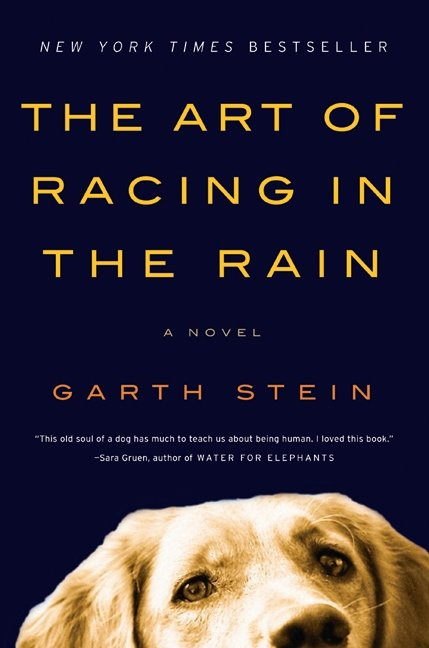

"It can't happen here" ,by Sinclair Lewis. |
A classic. Written at the right time (1935). As relevant as ever these days (Nationalism rise, aka Trump). Scary, depressing, but it is good to have the vocabulary to talk about these things. Hoping for a better future. |
June-9-2018. |
|

|
"After the shot drops" ,by Randy Ribay. |
I know the author!! Co-teacher at my school. How awesome is that?!? Young-Adult book, containing young-adults dilemas: Friends, your own, drawing the lines, and all this with the background of social issues (Black/White, Rich/Poor, Boys/Girls). Highly recommend. |
April-19-2018. |
"Something missing" ,by Matthew Dicks. |
Very cool idea, but somehow it is getting old after 100 pages. Good thing it is a short novel. Happy ending and all. |
April-2-2018. |
|

|
"A Horse Walks into a Bar" ,by David Grossman. |
Life. Reckoning with our childhood. Interesting to note how almost every other book I read has a holocaust connection. Read this book in Hebrew, during our Israel trip. |
February-25-2018. |

|
"Born to run" ,by Christopher McDougall. |
Story of ultra-running, and whether we, as a species, were gifted ultra-runners. Was funny to read whilst many of the names mentioned, and races, I've met/been in person. Made me rethink my 'change choose every 300 Miles' thinking, and barefoot. Did i mention I signde up for 200 miles race this year?!? |
January-24-2018. |

|
"The Nest" ,by Cynthia D'aprix Sweeney. |
Life. Everyone was relying on some inheritance money. And then it doesn't come. |
November-25-2017. |

|
"Two Hours: The quest to run the impossible marathon" ,by Ed Caesar. |
In search of the human limits. Right now it is 2:02 marathons. Some perspective on how amazing it is. Motivational running material. |
September-17-2017. |
"Most wanted particle" ,by Jon Butterworth. |
The hunt for the Higgs Boson, which ended successfully (and with a Nobel laureate in 2013). An amazing inside story about the most basic particles. Higgs boson is also called the 'God particle', and it is the one who can create mass from energy. Highly recommend, but it would definitely help if you did take a course in quantum mechanics etc. |
June-17-2017. |
|
"Uncle Petros and Goldbach's Conjecture: A Novel of Mathematical Obsession" ,by Apostolos Doxiadis. |
The beauty of pure mathemtics, and pursuing interest in a susbject for it's own aestethics and beauity. |
January-01-2017. |
|
"Look who's back" ,by Timur Vermes. |
Yes, he is back after 80 years. The book is not really pushing the point as it should have, but rather goes for the easy laugh. Still, readabale. |
Oct-08-2016. |
|
"A Long Way Down" ,by Nick Hornby. |
Four people trying to commit suicide by jumping from the top of a building on New Year's eve. Is there any meaning to all of this? |
June-17-2016. |
|
"When Breath Becomes Air" ,by Paul Kalanithi. |
Life and death, and the pursuit of meaning. An amazing true story of an amazing person who set out to find the meaning of soul and physical body through words, ended as neurosurgeon (mind and soul), and then faces life and death. |
April-09-2016. |
|

|
"Me before you" ,by Jojo Moyes. |
Started like a chick-flick kind of book, and grew up on me. Like a good book, makes you ask questions and examine your opinions. Life, and why to live them. |
March-25-2016. |

|
"The man in the high castle" ,by Philip K. Dick. |
A great combination with the Netflix original series on the book. The book is *very* different from the book, yet i felt was properly complemented by it. Highly recommend both. |
March-10-2016. |

|
"Leaving Time" ,by Jodi Picoult. |
Fiction, mystery. Story, well written. And all intertwined with Elephants. Worth reading on vacation/plane. |
February-15-2016. |

|
"The Martian" ,by Andy Weir. |
Fiction. NASA astrounaut stranded on Mars. Interesting 'action/thriller' kind of book. A somewhat interesting question: What is the value of human life? (and i mean in dollars!). OR maybe it's priceless? |
January-26-2016. |
"King's Gambit: A Son, A Father, and the World's Most Dangerous Game" ,by Paul Hoffman. |
Non-fiction, stitched together epsiodes from an adult who is getting back into the game, trying to figure out it's addictive hold on many people. Very good reading for someone who is addicted as well... |
January-07-2016. |
|

|
"The Banks of Certain Rivers",by Jon Harrison. |
Novel, takes place in present-time Michigan. Running Coach in high-school, his (in coma) wife, teenage son, and life. Maybe if you have nothing better to do than read on the beach... |
July-10-2014. |

|
"Brain on Fire",by Susannah Cahalan. |
Memoir, true story. A reporter at the Post, gets sick and swirls down the rabbit hole into madness. A month of treatment, with brain-biopsy and more, and it turns out the problem is an inflammation in the brain. After treatment she fully recovers. Amazing. How fragile we all are. |
April-15-2014. |

|
"Mr. Penumbra's 24 hour bookstore",by Robin Sloan. |
Mook:: Fiction. Similar to 'Da-Vinci code', only starts in the Bay area, with googlers and all, and San Francisco flavor. okay. |
Mar-15-2014. |
"The Lowland",by Jumpha Lahiri. |
Boomook:: Fiction. Life (wasted) story, with the backdrop of India in the 70's, Mao's influence, revolution. |
Nov-25-2013. |
|

|
"Captain Phillips", starring Tom Hanks. |
Boomook:: Real story. Pirates take control of a ship near the horn of Africa, evolves into a captain-hostage situation on a life-boat. Amazing: You know the whole story, and still are captivated by the plot evolving. Recommend! |
Oct-26-2013. |

|
"Moonwalking with Einstein", by Joshua Foer. |
(Boomook as well) Non fiction. The subtitle is: "The art and Science of Remembering Everything". A year long journey into the art of memorizing stuff. With Google and computers at our fingertips, relying on external-memory is the norm. Is there no value to actual memorization? Very readable and enjoyable. Recommend! |
Oct-06-2013. |
"We Need To Talk About Kevin", by Lionel Shriver. |
(This is a half-book review) A mother's effort to understand her son's violent behavior, two years AFTER he goes on a shooting spree at school. I decided NOT to finish reading it. The book is very well written, the subject is very interesting ('What if some people ARE born evil?'), but it is simply too dark of a book for me. I guess I am simply not ready enough to read this. Recommendation: Read at your own risk. |
May-28-2013. |
|
"Wild: From Lost to Found on the Pacific Crest Trail", by Cheryl Strayed. |
True story of how 'alone' and 'nature' are often the best healers, especially when taken in long doses. Too often we are always connected. Recommend! |
April-18-2013. |
|

|
"The Secret Life of Bees", by Sue Monk Kidd. |
Set in N. Carolina, 1964, after the Civil-Rights act. Beautiful story of forgiveness, people, and the mother in all of us. Highly recommend. |
February-17-2013. |

|
"For the relief of unbearable urges", by Nathan Englander. |
Collection of short stories. From Stalin, to Chelem, to Brooklyn and Jerusalem. Recommend. Fascinating how we are always a part of the culture we were brought up in! |
January-31-2013. |

|
"Flight Behavior", by Barbara Kingsolver. |
This one takes place in rural Tennessee, in a culture i can only imagine really exists. The book itself is well written, though toward the ending gets too much symbolic and 'the wrong ending' (at least to my taste). '3 out of 5' if i had a 5-star rating system... |
December-29-2012. |

|
"City of Thieves", by David Benioff. |
Takes place in Leningrad (Saint Petersburg) during the siege of WWII. Very strange, and i thought i didn't really like it. But the fact is that i couldn't put it down... Finished it all during the flight. So it must be good for its kind. |
November-21-2012. |

|
"Room", by Emma Donoghue. |
Very touching story on humans, humanity, and society. Highly recommend. |
Oct-18-2012. |
"Extremely Loud and Incredibly Close", by Jonathan Safran Foer. |
Takes place in post 9-11 Manhattan, the journey of an autistic child who lost his father in the Twin-Towers. Very captivating book. Highly recommend! |
May-6-2012. |
|
"The Weird Sisters", by Eleanor Brown. |
Three sisters converge back home to Ohio after years of being away, only to discover life... My kind of book. Highly recommend ! |
Apr-8-2012. |
|
"The Fallback Plan", by Leigh Stein. |
Somewhat reminds me of the "Zen and the art of Motor..", but much (much) lighter, and MUCH newer (2012 book!!). I bet only 10% of the readers will like it, but i certainly did. Recommended. |
Feb-18-2012. |
|

|
"What did you do in the war daddy?", by Sabine Reichel. |
A truly amazing, thought provoking, enlightening, book. Teaches us about prejudice, importance of history, and communication. Random pick from the used-book-store shelf. I would put it even as 'must read' for the prepared mind. |
Jan-29-2012. |

|
"In the land of no right angles", by Daphne Beal. |
Good read on American-girl in Nepal/India. We sometime like to think we can play God in the lives of others. But then we usually grow up... Recommend. (This was a random pick from the library.) |
Jan-14-2012. |

|
"Packing for Mars", by Mary Coach. |
How would the crew survive, physically and mentally, if subjected to 500-days in a small space, weightless, with other crew members? It turns out that the psychology is pretty complicated.... Something akin to predicting how married couples will hold through life. Non-fiction. Medium-cold. |
Dec-29-2011. |

|
"No Country for Old Men", by Cormac McCarthy. |
(I can't beleive the following was my original review. Maybe now i am tainted by the movie i saw. Anyway, it is a good book). My flights to Japan just zoomed by thanks to the book. Definitely one for the read-again list. Like "Zen and the art of motorcycle..", this book carries you along with a definite atmosphere and feeling (only much shorter/lighter? reading). Highly recommend (and though i haven't seen the movie, it is hard to believe it will carry through the same way). |
October 28, 2011. |

|
"The Guernsey Literary and Potato Peel Pie Society", by Mary Ann Shaffer. |
Takes place in the occupied british channel islands during WWII. Very readable. |
2011. |

|
"Carry On, Mr. Bowditch", by Jean Lee Latham. |
Motivating book on the development of maritime navigation. Not one formula in there! |
2011. |
"Netherland", by Joseph O'Neill. |
New York city as the backdrop for Life after Sep-11, Dutchman playing Cricket. |
. |
|

|
"Chasing Daylight", by Eugene O'Kelly. |
The true story of the head of KPMG, who finds out he has only 3 more months to be here. Short reading, and very moving. Highly recommend. |
September 4, 2011. |

|
"A walk in the woods", by Bill Bryson. |
Very enjoyable reading. Recommended by a coworker who knew i am an ultra-runner. Great read, humoristic, and reflective of our current society and culture. A journey to do the Appalachian trail. I am really surprised what made it so enjoyable. The closest thing stuck in my mind is the Seinfeld episode where George is trying to pitch the idea of a 'TV show about nothing'... Anyway, recommended reading! |
February 16, 2011. |

|
"Eat, Pray, Love", by . |
Definitely enjoyable. (yes, i know...). Take it to your next flight ! |
December 4, 2010. |
"Spin", by Robert Wilson. |
Science fiction. Touches on our own mortality and how people deal with it. Time, scale, values. I enjoyed it! Was good to go back to Sci-fi after a long hiatus... Thanks to Penny Beeston for recommending the book! http://www.amazon.com/Spin-Robert-Charles-Wilson/dp/0765309386 |
October 21, 2010. |
|
"West of Jesus", by Steven Kotler. |
Loved it !! Found it in a used-book shop, read it in the aisle, all the way back to the car, and just couldn't put it down. http://www.amazon.com/West-Jesus-Surfing-Science-Origins/dp/1596910518 |
September 29, 2010. |
|

|
"The Curious Incident Dog Night Time", by Mark Haddon. |
The world in the eyes of an Autist kid. An eye opener story. Hot. |
??. |

|
"Zen and the art of motorcycle maintainance", by . |
Classic. Read it a few times... |
??. |
 |
"The art of racing in the rain", by . |
Nice easy reading. Life... |
??. |

|
"Running to Maputo", by Albie Sachs. |
Randomly picked up from a used book store. An amazing true story of white-man in aparthied South-Africa, starting when he loses his leg in a bomb explosion under his car. Highly recommend. |
??. |
"A Painted House", by John Grisham. |
A novel, NOT legal thriller... Mexican season workers, farm house family, and local hill-billys. Very well written. |
2009. |
|

|
"Life of Pi", by Yann Martel. |
Fantasy story. |
2009. |

|
"Can you make a living doing that?", by Brad Kearns. |
Life of professional tri-athlete. |
200x. |

|
"Nickel and Dimed", by Barbara Ehrenreich. |
Life at the low-end of the income scale. |
200x. |
"A lesson before dying", by Ernest Gaines. |
Takes place in the south, before the civil-rights movement. Interacting with an (innocent retarded) man sentenced to the death-row (and eventually executed) trying to bring him some enlightenment. |
200x. |
|
"Poisonwood Bible", by Barbara Kingsolver. |
A missionary in Africa marks the life of his three daughters and wife. Highly recommend! |
200x. |